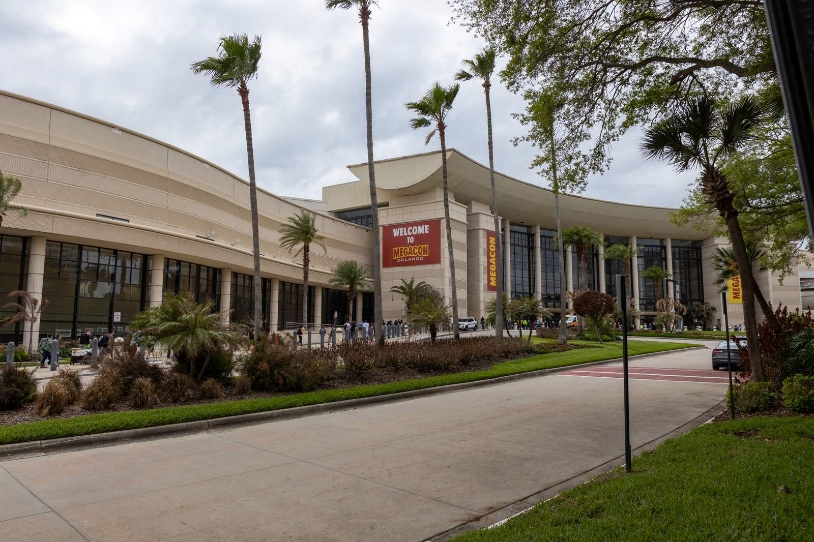

Venue · Convention centre
Orange County Convention Center
- Type
- Convention centre
- Location
- Orlando, United States
- Address
- West Building, 9800 International Drive, Orlando, FL 32819 (North Building 9400 Universal Blvd; South Building 9899 International Drive)
- Capacity
- 2,643 capacity
- Exhibition space
- 190,936 m²
- Halls
- Official facility-information page: 2,055,222 sq ft of exhibit space (West 1,104,940; North-South 950,282); 70 meeting rooms and 226 breakout rooms; Valencia Ballroom 62,182 sq ft; Linda W. Chapin Theater 2,643 seats
- Official website
- https://www.occc.net/
About
Orlando’s city-owned convention centre, on International Drive and Universal Boulevard. Official facts give 2,055,222 sq ft of exhibit space (converted to 190,937 m²) and 7 million sq ft in total. Headline capacity_max_delegates is the official Linda W. Chapin Theater seating figure (2,643); a single maximum for the exhibit halls is not published. Official FAQ addresses are West 9800 International Drive, North 9400 Universal Blvd and South 9899 International Drive. Coordinates are the atlas precise pin, which matches a Nominatim result for the West Building.
Spaces
| Name | Type | Capacity | Area |
|---|---|---|---|
| West Building exhibit space | — | — | 102,652 m² |
| North-South Building exhibit space | — | — | 88,284 m² |
| Valencia Ballroom (West Building) | — | — | 5,777 m² |
| Linda W. Chapin Theater (West Building) | — | 2,643 theatre | — |
Upcoming events
- InfoComm 2027Orlando, United StatesTech
- FETC 2027 (Future of Education Technology Conference)Orlando, United StatesEducation
Sources
- Official source — https://www.occc.net/About-Us/facility-information
- Official source — https://www.occc.net/about-us-faqs
- Official source — https://www.occc.net/